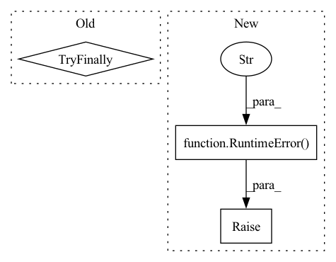

Pattern ID :29323
Before Change
with utils.in_eval_mode(model), torch.no_grad():
device = utils.get_device(model)
try:
// If model is not on CPU, convert it to CPU
model.cpu()
for conv, bn in conv_bn_pairs:
_fold(conv, bn, fold_backward=True, fold_to_scale=fold_to_scale)After Change
for bn, conv in bn_conv_pairs:
if isinstance(conv, QcQuantizeWrapper):
raise RuntimeError(f"Forward folding to scale is not possible. Got {conv}" )
def _fold(conv, bn, fold_backward):
if isinstance(conv, QcQuantizeWrapper) or isinstance(bn, QcQuantizeWrapper):
assert isinstance(conv, QcQuantizeWrapper) and isinstance(bn, QcQuantizeWrapper)In pattern: SUPERPATTERN
Frequency: 3
Non-data size: 3
Instances Fragment ID: 86043744
Project Name: quic/aimet
Commit Name: c9cadfe0cede11da01757e9e189988fa912b05dd
Time: 2022-05-19
Author: quic_kyunggeu@quicinc.com
File Name: TrainingExtensions/torch/src/python/aimet_torch/batch_norm_fold.py
M Class Name: AnonimousClass
N Class Name: AnonimousClass
M Method Name: _fold_given_batch_norms(3)
N Method Name: _fold_given_batch_norms(4)
M Parent Class:
N Parent Class:
M File Name: TrainingExtensions/torch/src/python/aimet_torch/batch_norm_fold.py
N File Name: TrainingExtensions/torch/src/python/aimet_torch/batch_norm_fold.py
M Start Line: 237
M End Line: 267
N Start Line: 299
N End Line: 325
Before Change
while True:
rec = _predict_chars(model, sp, start_string, store).data
After Change
...
if invalid > max_invalid:
raise RuntimeError("Maximum number of invalid lines reached!" )
if lines_generated >= config.gen_lines:
break
Fragment ID: 86043742
Project Name: gretelai/gretel-synthetics
Commit Name: 95f041d1662c5ad2c38fa89f6df46274f0ece5cc
Time: 2020-06-15
Author: zredlined@users.noreply.github.com
File Name: src/gretel_synthetics/generate.py
M Class Name: AnonimousClass
N Class Name: AnonimousClass
M Method Name: generate_text(4)
N Method Name: generate_text(3)
M Parent Class:
N Parent Class:
M File Name: src/gretel_synthetics/generate.py
N File Name: src/gretel_synthetics/generate.py
M Start Line: 145
M End Line: 166
N Start Line: 108
N End Line: 196
Before Change
_callbacks.append(early_stopping_callback)
best_val = None
After Change
except AttributeError:
best_val = None
except (ValueError, IndexError):
raise RuntimeError("Model training failed. Your training data may have too few records in it. "
"Please try increasing your training rows and try again" )
except KeyboardInterrupt:
...
_save_history_csv(
history_callback, Fragment ID: 86043743
Project Name: gretelai/gretel-synthetics
Commit Name: 63870ba7958394cb773ea344fefd8e94b08dae12
Time: 2021-04-05
Author: tyler@gretel.ai
File Name: src/gretel_synthetics/tensorflow/train.py
M Class Name: AnonimousClass
N Class Name: AnonimousClass
M Method Name: train_rnn(1)
N Method Name: train_rnn(1)
M Parent Class:
N Parent Class:
M File Name: src/gretel_synthetics/tensorflow/train.py
N File Name: src/gretel_synthetics/tensorflow/train.py
M Start Line: 200
M End Line: 224
N Start Line: 200
N End Line: 224